爱狗就该给它最好的教育，
人无规则不正，狗无规则，灾难。
对很多犬主家长来说，养狗的初衷里都有排解孤独这个考量，但如果没有对狗狗进行基本的社交礼仪教育，恐怕在养狗后人反而会更加孤独，甚至被孤立。狗狗的礼仪分两部分，一个对外，社交礼仪，一个对内，居家礼仪。在外，如果狗狗不能友好地面对陌生人或者其他宠物，随意随地地大小便，撕咬破坏公共设施，它在社区里受到欢迎的可能性基本比零还低。
尽管我们都乐意让狗狗保持天性，让它们随性而自在地生活，但是我们终归是共同生活在人的社会里，一个有规则、秩序需要遵守的社会。所以，训练和温饱一样重要。
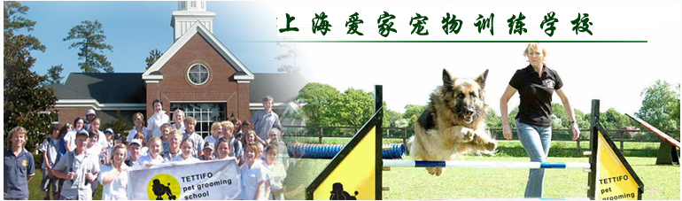
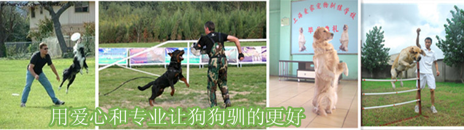
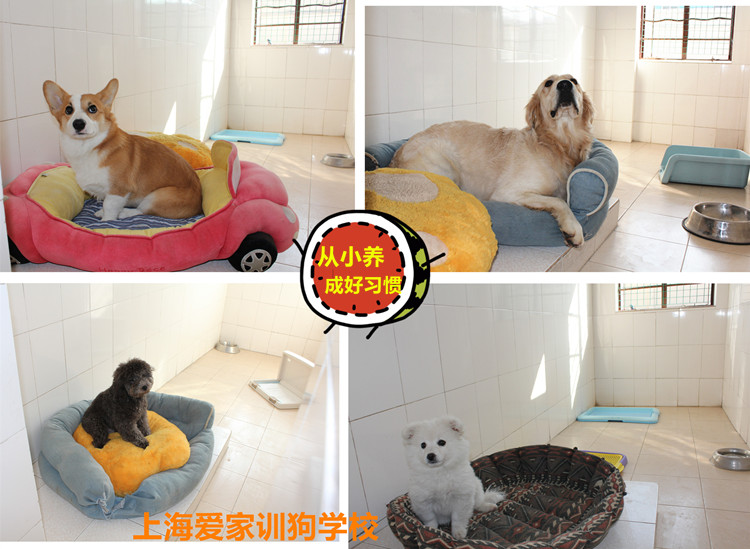
关于我们：训狗
爱家宠物训练中心帮到你:
1.训练狗狗的等级观念，认可主人的“领袖”地位，服从主人的指令，做一只听话的好狗狗
2、改变坏习惯，做一只懂事礼貌的乖狗狗
3、学会更多的社交技巧，与别的狗狗开心玩耍
4、学会更多可爱的动作，取悦主人
5、掌握更多的运动技能，成为运动明星，为主人增加荣耀``````
通过本次培训，会让你更懂你的狗狗，拉近你与它的距离，让你懂得狗狗一天的生活是怎样的，让你能轻松处理与狗狗相处时遇到的所有问题。
不用再羡慕，电视 电影里的那些明星狗，因为你家的宝贝，也一样可以！
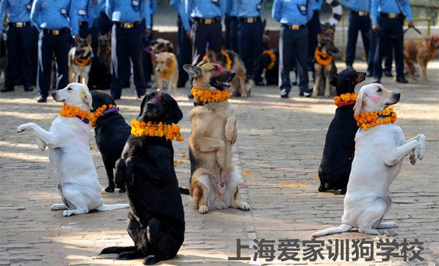

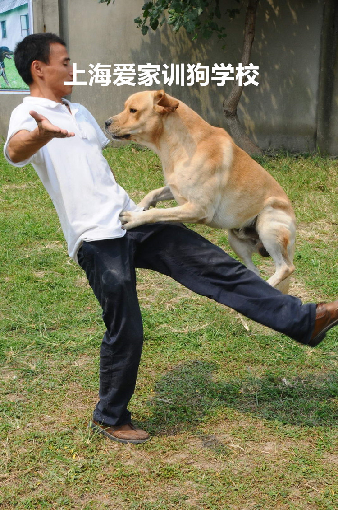
爱家采用的6个走进狗狗心理训犬方法
0.1.爱家宠物训练学校运用国际训练方法从狗狗的心理，行为和性格特征，以及狗狗环境的适应能力来综合评估训练狗狗，培养狗狗的综合素质。
02我们所有的训练员、饲养员和狗狗们生活在一起。训练员与犬只建立亲和关系快而稳固，随时随地的训练，模拟家庭环境，建立犬只良好的生活规则。同样的训练时间获得更好的训练效果。
03.全程一对一，及N加一模式,理论实践相结合的教学方法，把训练方法教给家长，并辅导完成课程要求。
04.
采用最新的“快乐式训犬”理念，让您和您的爱犬在多种游戏与快乐中都能学习.并得到最多最广的技能训练,同时利用多样化、趣味化. 灵活多变手法，为您的爱犬量身定做详细的驯养方案，做到完全的放心。
05我们的教育不是教家长如何训练狗狗做几个动作。我们希望家长能够了解狗狗的思考及行为方式，学习如何和狗狗沟通。学会如何从小引导，完整的发展狗狗的个性？学习如何顺利让它适应我们的生活规则，更好的进入社会，被我们所接受！
06在训练服务中,所倡导的家庭式训犬环境就是让狗狗能够生活在象家一样的起居空间里，不仅从心理上，更从舒适度上为您的爱犬量身打造出一个充满家庭温暖的学习环境，以便培养爱犬今后在您家中长久生活的良好习惯！
采用国际上最先进的训练方法合程教学，使用最柔软，最人性化的训练方式。会教给您狗狗各种各样，专业化和创意化的训练项目
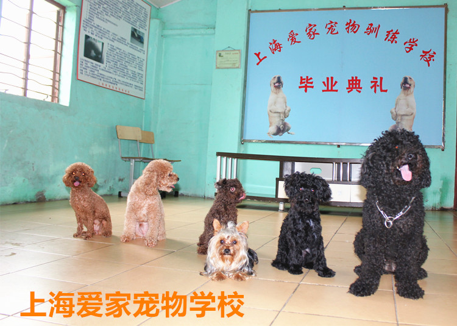
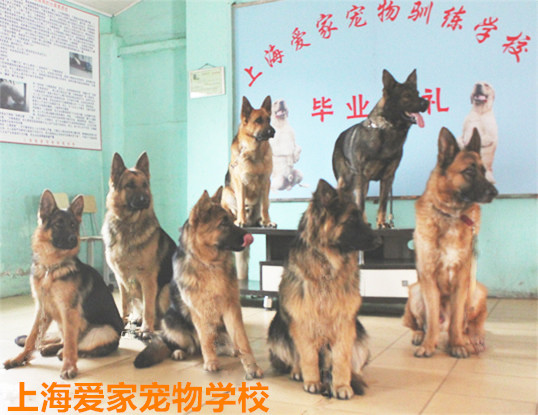
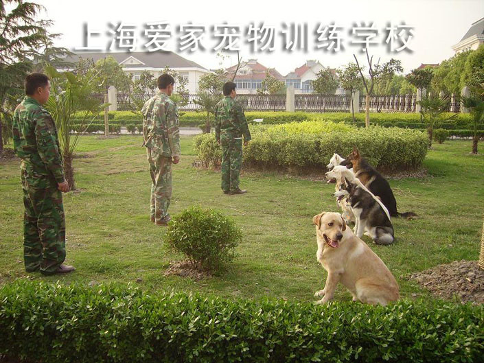
在训练期间，我们还会做以下功课：
（1）训练狗与狗的社交能力——让狗狗与其他犬只一起友好的玩耍。教授们会根据每只狗狗的性格不同进行分类，在课间休息时会根据分类让适合性格的狗狗一起友好玩耍。避免狗狗因为缺少正确的社交能力对其他狗狗产生害怕情绪甚至因此攻击其他犬只，从而造成您和他人的困扰或纠纷。同时也让狗狗不会因为缺少同类朋友而对您产生过份的依赖，以致您不在身边时狗狗会患分离焦虑症（变得狂躁不安或极度胆小甚至拒绝进食）等。
（2）训练狗狗与人社交的能力——让狗狗与人类友好的相处。在训练期间我们会让不同的狗狗教授或陌生人与狗狗进行互动，增强狗狗的社交能力。避免因缺少正确的社交能力而对人类产生害怕的情绪甚至因此攻击他人，造成您和他人的困扰或纠纷。
（3）训练狗狗在不同环境的适应能力——让狗狗通过适应不同的新环境从而降低应激反应。狗狗教授会根据狗狗的性格制订学习计划，分时段带狗狗去到不同的环境下进行玩耍、训练等。这样能有效避免狗狗因为环境变化产生应激反应造成焦虑不安或者拒食等情况，让您在外出旅行或公干时无后顾之忧！
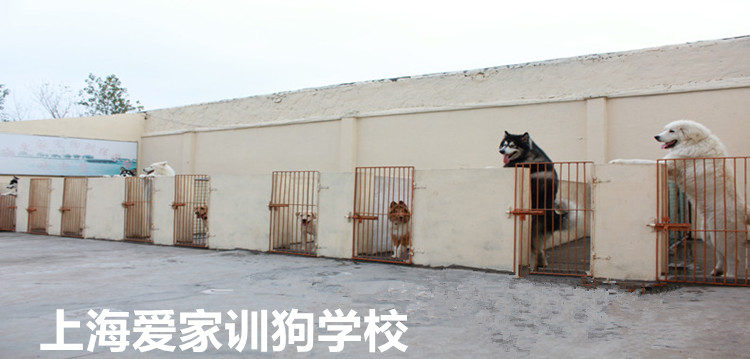
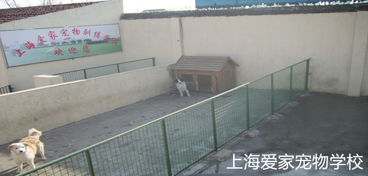
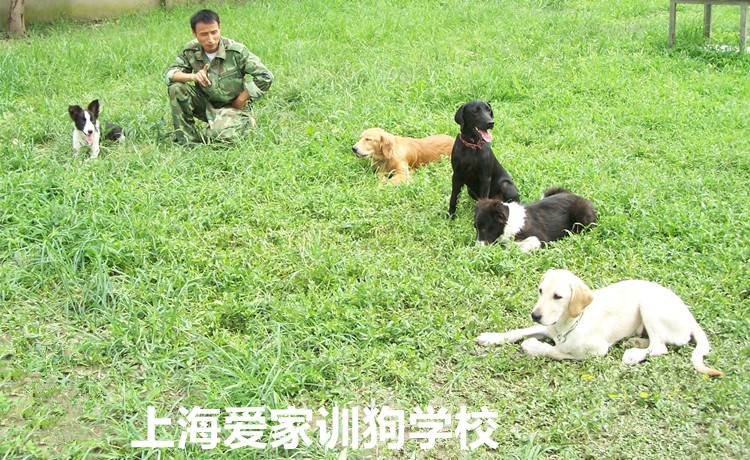
2001年5月由新加坡企业管理的国际训犬技术交流中心聘请训犬专家，国内第一个由新加坡人士管理的专业犬训练培训学校。并以国际先进训犬理念带领现有部队退役训导16名训犬师服务于上海爱犬人士，其中本科毕业的退役训导员５人，大专训练基地的训导员５名，高中毕业的宠物训导员6人。此外还经常邀请欧美等国际训犬专家来校指导培训以确保我们国际训犬水平。
现二十多年来学校共训练金毛犬、挪威拿犬、黑背犬、牧羊犬、雪橇犬、可卡犬、雪纳瑞犬、斗牛犬、圣佰拿犬、拉不拉多犬、泰迪犬等百个品种共近三千余条犬，其合格率和客人满意率均在98%以上。
爱家宠物学校以“让世界上的爱狗人和狗都快乐”作为企业使命，以“让狗每天都摇着欢快的尾巴，！和它共享相互带来的乐趣”作为企业的经营核心。20年来的发展历程可以说是犬的运动、犬行业人才教育的国际犬文化交流平台，跃升为国际颇具影响力和发展潜力的宠物学校，为使我国犬文化和服务产业早日走向世界舞台贡献着自己的智慧与热忱。
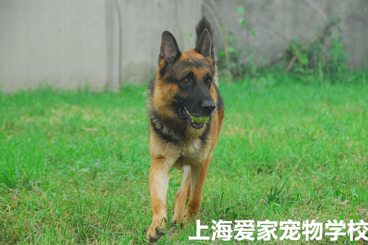
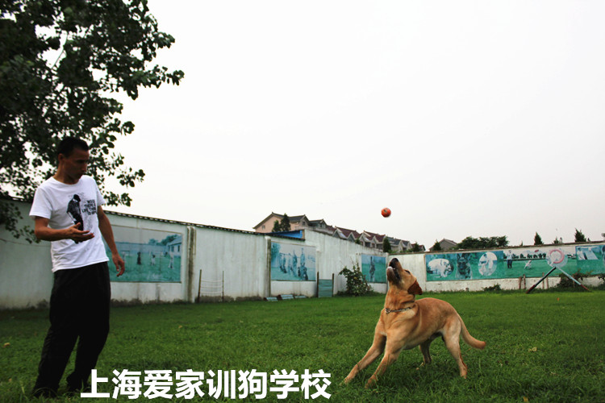
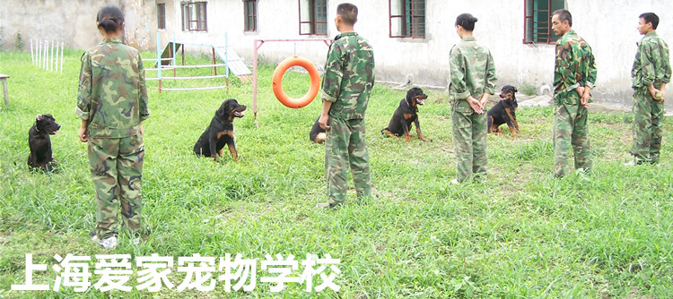
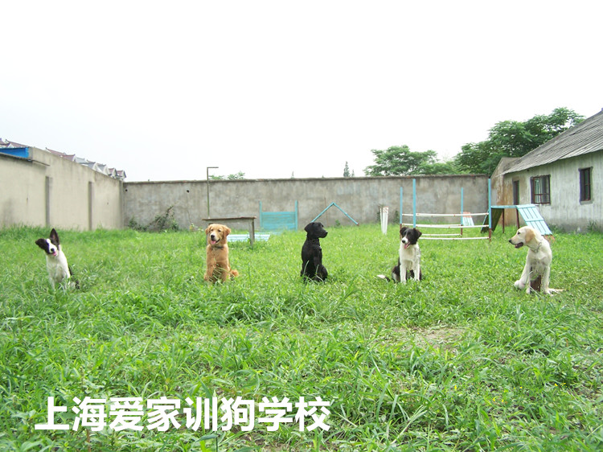